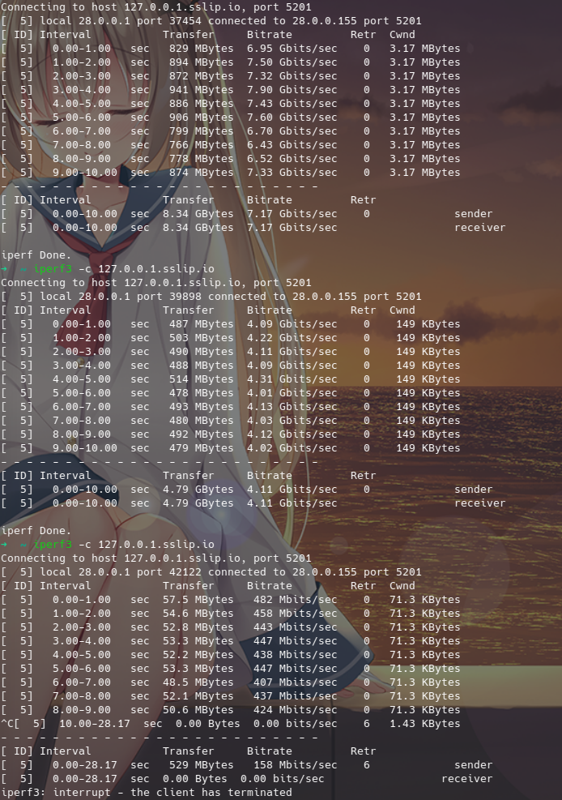

Tun
tun:
enable: true
stack: system
auto-route: true
auto-detect-interface: true
dns-hijack:
- any:53
# device: utun0
# mtu: 9000
# strict-route: true
# inet4-route-address:
# - 0.0.0.0/1
# - 128.0.0.0/1
# inet6-route-address:
# - "::/1"
# - "8000::/1"
# endpoint-independent_nat: false
# include-uid:
# - 0
# include-uid-range:
# - 1000-99999
# exclude-uid:
#- 1000
# exclude-uid-range:
# - 1000-99999
# include-android-user:
# - 0
# - 10
# include-package:
# - com.android.chrome
# exclude-package:
# - com.android.captiveportallogin
enable¶
是否启用 tun 模式来路由全局流量。
可用值：true/false
stack¶
tun 模式堆栈,如无使用问题,建议使用 system 栈;MacOS 用户推荐 gvisor栈
可用值： system/gvisor/mixed/lwip
协议栈之间的区别
*system 使用系统协议栈,可以提供更稳定/全面的 tun 体验,且占用相对其他堆栈更低。
* gvisor 通过在用户空间中实现网络协议栈,可以提供更高的安全性和隔离性,同时可以避免操作系统内核和用户空间之间的切换,从而在特定情况下具有更好的网络处理性能
* mixed 混合堆栈,tcp使用 system栈,udp使用 gvisor栈,使用体验可能相对更好
* lwip 即 lightweight IP,是一款专为嵌入式系统设计的TCP/IP协议栈,采用了单线程的事件驱动模型,性能表现可能不如 system/gvisor协议栈
* lwip 堆栈需要启用CGO
* 性能测试
device¶
指定 tun 网卡名称,MacOS 设备只能使用 utun 开头的网卡名
auto-route¶
自动设置全局路由,可以自动将全局流量路由进入 tun 网卡。
可选：true/false
auto-detect-interface¶
自动选择流量出口接口,多出口网卡同时连接的设备建议手动指定出口网卡
可用值：true/false
dns-hijack¶
dns 劫持,一般设置为 any:53 即可, 即劫持所有 53 端口的 udp 流量
MacOS 无法自动劫持发往局域网的 dns 请求
Android 如开启 私人dns 则无法自动劫持 dns 请求
linux 如果 systemd-resolved 开启无法自动劫持 dns 请求
strict-route¶
严格路由,它可以防止地址泄漏,并使 DNS 劫持在 Android 和使用 systemd-resolved 的 Linux 上工作,但你的设备将无法被其他设备访问
可用值：true/false
mtu¶
最大传输单元, 可用值为 1-65534, 会影响极限状态下的速率,一般用户默认即可。
inet4-route-address¶
启用 auto_route时使用自定义 ipv4 路由而不是默认路由,一般无需配置。
inet6-route-address¶
启用 auto-route时使用自定义 ipv6 路由而不是默认路由,一般无需配置。
endpoint-independent-nat¶
启用独立于端点的 NAT,性能可能会略有下降,所以不建议在不需要的时候开启。
include-uid¶
包含的用户,使其被Tun路由流量,未被配置的用户不会被Tun路由流量,默认不限制
UID 规则仅在 Linux 下被支持,并且需要 auto_route
include-uid-range¶
包含的用户范围,使其被Tun路由流量,未被配置的用户不会被Tun路由流量
exclude-uid¶
排除用户,使其避免被Tun路由流量
exclude-uid-range¶
排除用户范围,使其避免被Tun路由流量
include-android-user¶
包含的Android用户,使其被Tun路由流量,未被配置的用户不会被Tun路由流量
Android 用户和应用规则仅在 Android 下被支持,并且需要 auto_route
| 常用用户 | ID |
|---|---|
| 机主 | 0 |
| 手机分身 | 10 |
| 应用多开 | 999 |
include-package¶
包含的Android应用包名,使其被Tun路由流量,未配置的应用包不会被Tun路由流量
exclude-package¶
排除Android应用包名,使其避免被Tun路由流量
Tun 的协议栈网络回环测试¶
从上到下分别为 system/gvisor/lwip,仅供参考,平台为 linux,Windows 和 MacOS 可能会有差异
